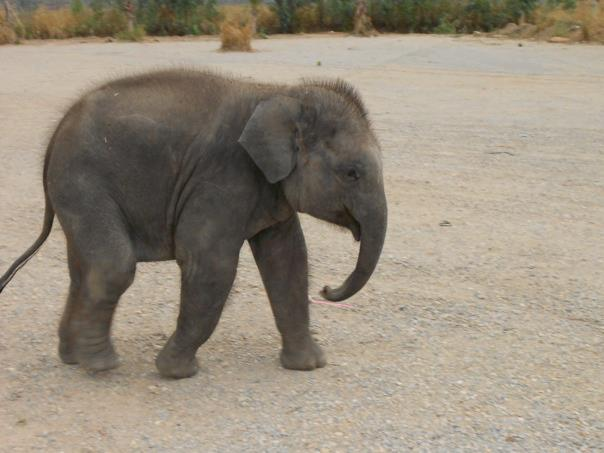
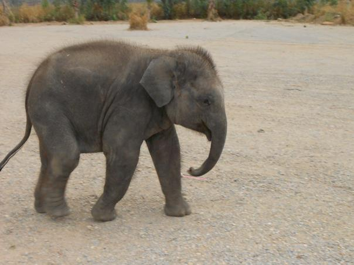
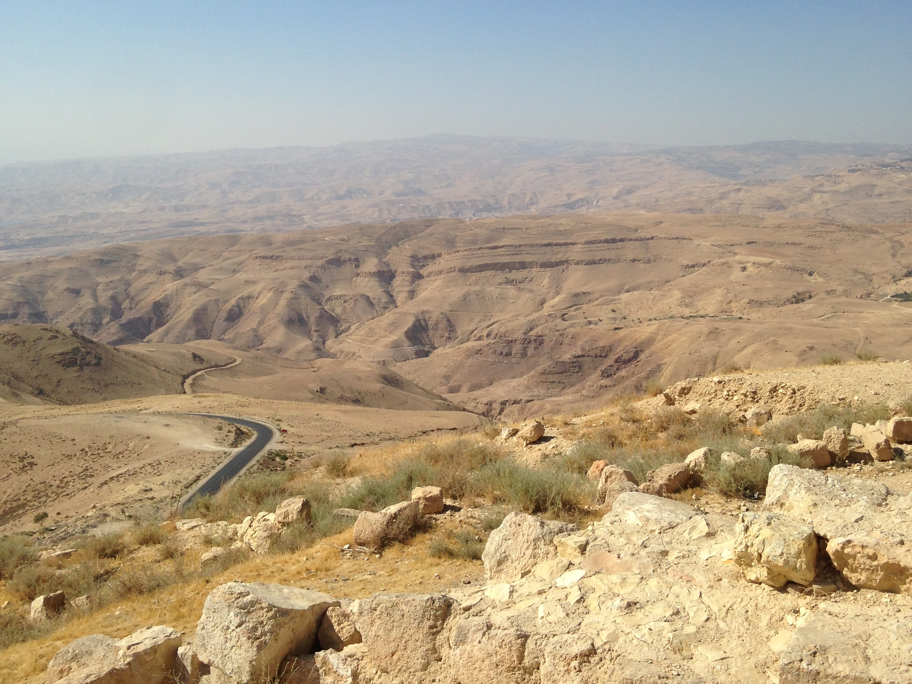
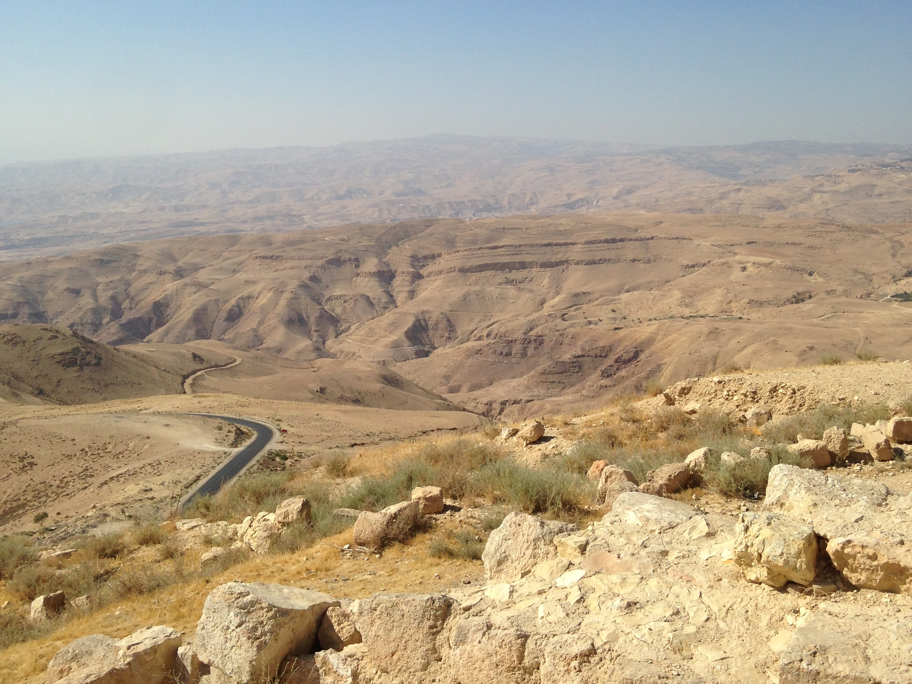

I'd always dreamt of traveling the world, whatever that means, but I was always too afraid to actually do it. My family was never much for traveling, and didn't have much exposure to other cultures. Though I've always been adventurous, I felt too intimidated to venture that far out on my own. I didn't even leave my hometown for college. The following details trips I took over the course of a little over a year to finally force myself out of my shell.
ประเทศไทย
Studying abroad in Thailand
I'd never left the country before, but I really wanted to study abroad. The university I attended has campuses in several countries and I kept telling myself I needed to take advantage of the program. By my last year in school, I was running out of time so I finally decided to do it. Admittidly, my decision of location was largely based on finances, because I was able to go the Thai campus for cheaper than any other other international campus (and even my home campus). It ended up being the best choice I think I could have made.

 


Việt Nam
Spring break in Vietnam
For spring break I went to Ho Chi Minh City, Vietnam with three friends.
I fell in love with the food in Vietnam. I hadn't really had Vietnamese food before visiting, but I could have lived there because of it. Of course the phở was delicious anywhere I had it, but my favorite meal was a bahn mi sandwich from a food cart near the hostel I stayed at. I don't have a photo of this beauty, and I honestly still don't know exactly what was on it, but it was my go to at about 1:00 in the morning after a night out.
الأردن
Visiting a friend in Jordan
After returning from studying abroad, I finished my final semester of college and then moved to Chicago. A few months after moving, my savings were nearly gone and I knew I'd have to get a full-time job soon. I decided to take one more trip before starting "adulthood." I went with my girlfriend at the time to visit her friend in her hometown of Amman, Jordan. We spent several weeks traveling around the country.
 



יִשְׂרָאֵל
Exploring Israel
During our trip to Jordan, we spent a week in Israel. My ex-girlfriend has distant cousins who live there, so we were able to stay with a few of them. We spent most of our time in Jeruselum, Tel Aviv and Haifa. I had never planned to visit Israel but it was a very interesting experience that I'm glad to have had.